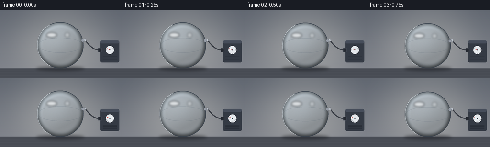
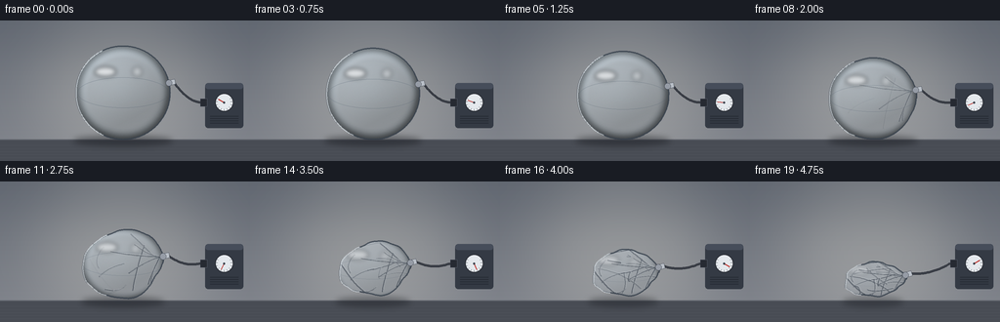
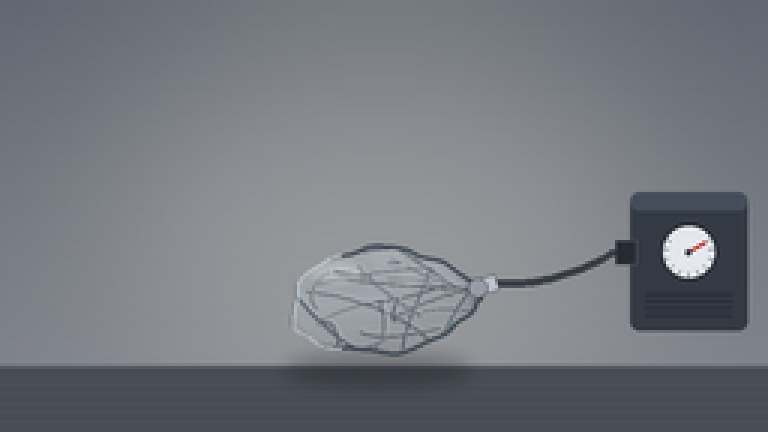
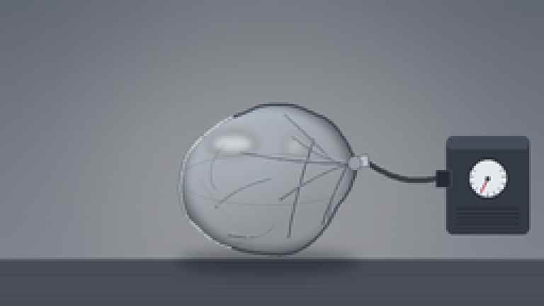

CODING AGENTS AS PIXEL WORLD MODELS
traex/Seed-2.1-Pro-0915 · phygen_018
点击播放 · 原生 RGB 像素
逐轮保存的候选
回放视频、检查图与代码变化。
每份候选均可单独播放。实际图片检查记录在下方工具轨迹中。
候选 01播放与检查图
点击播放 · 原生 RGB 像素


展开代码变化
--- 上一保存版本
+++ 本次保存版本
@@ -0,0 +1,356 @@
+"""Procedural text-to-video generation.
+
+Prompt: a timelapse of air being gradually and forcefully extracted from a
+sealed, empty plastic ball.
+
+The scene shows a clear plastic ball resting on a workbench, connected by a
+flexible hose to a small vacuum pump. As extraction progresses the ball
+shrinks, develops dents and folds, and finally collapses into a wrinkled,
+flattened shell. Everything is rendered with PIL/numpy at 3x resolution and
+downsampled for anti-aliasing.
+"""
+
+import json
+from pathlib import Path
+
+import numpy as np
+from PIL import Image, ImageDraw, ImageFilter, ImageChops
+
+import artifact_io
+
+W, H = 256, 144
+N = 20
+SS = 3
+SW, SH = W * SS, H * SS
+TABLE_Y = 122
+CX = 126.0
+R0 = 48.0
+PORT_ANGLE = np.deg2rad(-12.0)
+
+
+def smoothstep(a, b, x):
+ x = np.clip((x - a) / (b - a), 0.0, 1.0)
+ return x * x * (3 - 2 * x)
+
+
+def progress(i):
+ t = i / (N - 1)
+ # Slow at first, then forceful rapid collapse.
+ return t ** 1.7
+
+
+# --------------------------------------------------------------- background
+def make_background():
+ bg = Image.new("RGB", (SW, SH))
+ px = bg.load()
+ top = np.array([96.0, 102.0, 112.0])
+ bot = np.array([124.0, 128.0, 136.0])
+ for y in range(TABLE_Y * SS):
+ c = tuple((top + (bot - top) * (y / (TABLE_Y * SS))).astype(int))
+ for x in range(SW):
+ px[x, y] = c
+ # Soft spotlight behind the ball.
+ glow = Image.new("L", (SW, SH), 0)
+ gd = ImageDraw.Draw(glow)
+ gd.ellipse([(CX - 95) * SS, 10 * SS, (CX + 95) * SS, 140 * SS], fill=70)
+ glow = glow.filter(ImageFilter.GaussianBlur(34 * SS))
+ warm = Image.new("RGB", (SW, SH), (255, 250, 235))
+ bg = Image.composite(warm, bg, glow)
+ # Workbench surface.
+ d = ImageDraw.Draw(bg)
+ d.rectangle([0, TABLE_Y * SS, SW, SH], fill=(72, 76, 84))
+ d.line([0, TABLE_Y * SS, SW, TABLE_Y * SS],
+ fill=(96, 100, 108), width=SS)
+ for k in range(8):
+ y = (TABLE_Y + 6 + k * 3.2) * SS
+ d.line([0, int(y), SW, int(y)], fill=(78 + k, 82 + k, 90 + k),
+ width=1)
+ return bg
+
+
+# ------------------------------------------------------------ ball geometry
+DENTS = [
+ (np.deg2rad(28), np.deg2rad(22), 0.17, 0.10),
+ (np.deg2rad(105), np.deg2rad(30), 0.20, 0.28),
+ (np.deg2rad(175), np.deg2rad(26), 0.15, 0.42),
+ (np.deg2rad(235), np.deg2rad(34), 0.22, 0.20),
+ (np.deg2rad(305), np.deg2rad(24), 0.16, 0.52),
+ (np.deg2rad(60), np.deg2rad(16), 0.10, 0.62),
+]
+
+NOISE_PHASES = [(3.1, 0.0), (5.3, 1.7), (7.7, 4.1), (4.6, 2.9), (9.2, 0.8)]
+
+
+def ball_geometry(p, i):
+ sx = 1.0 - 0.26 * p
+ sy = 1.0 - 0.55 * p
+ w_half = R0 * sx
+ h_half = R0 * sy
+ cy = TABLE_Y - h_half
+ th = np.linspace(0, 2 * np.pi, 360, endpoint=False)
+ r = np.ones_like(th)
+ for center, width, depth, onset in DENTS:
+ strength = smoothstep(onset, onset + 0.35, p)
+ d = np.abs(np.arctan2(np.sin(th - center), np.cos(th - center)))
+ r -= depth * strength * np.exp(-0.5 * (d / width) ** 2)
+ wrinkle = 0.0
+ for freq, phase in NOISE_PHASES:
+ wrinkle += (0.012 * np.sin(freq * th + phase)
+ + 0.007 * np.sin((freq * 1.7) * th - phase * 2))
+ r += wrinkle * p
+ # Suction vibration during forceful extraction.
+ jitter = 0.012 * p * (np.sin(i * 2.1) + 0.5 * np.sin(i * 4.7))
+ r *= 1.0 + jitter
+ x = CX + w_half * r * np.cos(th)
+ y = cy + h_half * r * np.sin(th)
+ return x, y, w_half, h_half, cy
+
+
+def boundary_point(x, y):
+ k = int(round(np.rad2deg(PORT_ANGLE))) % 360
+ return x[k], y[k]
+
+
+# ------------------------------------------------------------------- folds
+def make_folds():
+ rng = np.random.default_rng(7)
+ folds = []
+
+ def disk_point():
+ while True:
+ u, v = rng.uniform(-0.92, 0.92, 2)
+ if u * u + v * v < 0.82:
+ return u, v
+
+ for _ in range(20):
+ u0, v0 = disk_point()
+ u1, v1 = disk_point()
+ um, vm = (u0 + u1) / 2, (v0 + v1) / 2
+ um += rng.uniform(-0.22, 0.22)
+ vm += rng.uniform(-0.22, 0.22)
+ folds.append({
+ "p0": (u0, v0), "pm": (um, vm), "p1": (u1, v1),
+ "onset": rng.uniform(0.18, 0.92),
+ "width": rng.uniform(0.8, 1.7),
+ "depth": rng.uniform(0.5, 1.0),
+ })
+ # A few creases converging near the extraction port.
+ for _ in range(5):
+ u0, v0 = 0.9 * np.cos(PORT_ANGLE), 0.9 * np.sin(PORT_ANGLE)
+ u1, v1 = disk_point()
+ folds.append({
+ "p0": (u0, v0),
+ "pm": ((u0 + u1) / 2 + rng.uniform(-0.15, 0.15),
+ (v0 + v1) / 2 + rng.uniform(-0.15, 0.15)),
+ "p1": (u1, v1),
+ "onset": 0.12,
+ "width": rng.uniform(0.8, 1.4),
+ "depth": rng.uniform(0.6, 1.0),
+ })
+ return folds
+
+
+FOLDS = make_folds()
+
+
+def quad_curve(p0, pm, p1, n=24):
+ ts = np.linspace(0, 1, n)[:, None]
+ a = (1 - ts) ** 2
+ b = 2 * (1 - ts) * ts
+ c = ts ** 2
+ return a * np.array(p0) + b * np.array(pm) + c * np.array(p1)
+
+
+# -------------------------------------------------------------------- pump
+def draw_pump(base, gauge_p):
+ layer = Image.new("RGBA", (SW, SH), (0, 0, 0, 0))
+ d = ImageDraw.Draw(layer)
+ x0, y0, x1, y1 = 210 * SS, 64 * SS, 249 * SS, 110 * SS
+ d.rounded_rectangle([x0, y0, x1, y1], radius=3 * SS,
+ fill=(52, 58, 68, 255))
+ d.rounded_rectangle([x0, y0, x1, y0 + 6 * SS], radius=3 * SS,
+ fill=(70, 77, 90, 255))
+ # Socket stub on the left face.
+ d.rectangle([x0 - 5 * SS, 80 * SS, x0 + 2 * SS, 88 * SS],
+ fill=(38, 42, 50, 255), outline=(90, 96, 108, 255))
+ # Gauge.
+ gx, gy, gr = 229.5 * SS, 84 * SS, 9.5 * SS
+ d.ellipse([gx - gr, gy - gr, gx + gr, gy + gr],
+ fill=(228, 232, 236, 255), outline=(40, 44, 52, 255),
+ width=SS)
+ for tick in range(11):
+ a = np.deg2rad(210 - 240 * tick / 10)
+ r0, r1 = gr * 0.72, gr * 0.92
+ d.line([gx + r0 * np.cos(a), gy + r0 * np.sin(a),
+ gx + r1 * np.cos(a), gy + r1 * np.sin(a)],
+ fill=(60, 66, 76, 255), width=max(1, SS // 2))
+ a = np.deg2rad(210 - 240 * gauge_p)
+ d.line([gx, gy, gx + gr * 0.7 * np.cos(a), gy + gr * 0.7 * np.sin(a)],
+ fill=(190, 50, 45, 255), width=SS)
+ d.ellipse([gx - SS, gy - SS, gx + SS, gy + SS],
+ fill=(60, 66, 76, 255))
+ # Vent slots.
+ for k in range(4):
+ yy = (98 + k * 2.4) * SS
+ d.line([x0 + 5 * SS, yy, x1 - 5 * SS, yy],
+ fill=(40, 45, 54, 255), width=SS)
+ base.alpha_composite(layer)
+ return 205.0, 84.0 # hose anchor in base pixels
+
+
+def hose_curve(a, b, sag):
+ a, b = np.array(a, float), np.array(b, float)
+ ctrl = (a + b) / 2 + np.array([0.0, sag])
+ pts = quad_curve(a, ctrl, b, 40)
+ return [tuple(v * SS) for v in pts]
+
+
+# ------------------------------------------------------------------ render
+def render_frame(i):
+ p = progress(i)
+ bg = make_background()
+ x, y, wh, hh, cy = ball_geometry(p, i)
+
+ # Contact shadow.
+ shadow = Image.new("RGBA", (SW, SH), (0, 0, 0, 0))
+ sd = ImageDraw.Draw(shadow)
+ sw_ = 2 * wh * (1.05 - 0.18 * p)
+ sd.ellipse([(CX - sw_ / 2) * SS, (TABLE_Y - 4) * SS,
+ (CX + sw_ / 2) * SS, (TABLE_Y + 6) * SS],
+ fill=(20, 22, 28, int(110 - 30 * p)))
+ shadow = shadow.filter(ImageFilter.GaussianBlur(3 * SS))
+ frame = bg.convert("RGBA")
+ frame.alpha_composite(shadow)
+
+ # Ball body mask.
+ poly = list(zip(x * SS, y * SS))
+ mask_img = Image.new("L", (SW, SH), 0)
+ ImageDraw.Draw(mask_img).polygon(poly, fill=255)
+ mask = np.asarray(mask_img).astype(float) / 255.0
+
+ yy, xx = np.mgrid[0:SH, 0:SW].astype(float)
+ nx = (xx / SS - CX) / wh
+ ny = (yy / SS - cy) / hh
+ d = np.sqrt(nx * nx + ny * ny)
+ ring = smoothstep(0.72, 1.0, d)
+ light = np.clip(0.82 + 0.35 * (-ny) + 0.18 * (-nx), 0.6, 1.25)
+ base_col = np.array([205.0, 219.0, 228.0]) * light[:, :, None]
+ crumpled = np.array([168.0, 175.0, 184.0])
+ col = base_col * (1 - 0.55 * p) + crumpled[None, None, :] * (0.55 * p)
+ col *= 1.0 - 0.5 * ring[:, :, None] ** 1.6
+ alpha = mask * (0.34 + 0.20 * (1 - np.clip(d, 0, 1)) + 0.55 * ring)
+ alpha *= 1.0 - 0.05 * p
+ # Subtle plastic grain.
+ rng = np.random.default_rng(100 + i)
+ grain = rng.normal(0, 3, (SH, SW)) * mask * 0.6
+ col += grain[:, :, None]
+ ball = Image.fromarray(np.dstack([
+ np.clip(col, 0, 255).astype(np.uint8),
+ np.clip(alpha * 255, 0, 255).astype(np.uint8),
+ ]).astype(np.uint8), "RGBA")
+ frame.alpha_composite(ball)
+
+ # Folds / creases, clipped slightly inside the shell.
+ clip = mask_img.filter(ImageFilter.MinFilter(3))
+ fold_layer = Image.new("RGBA", (SW, SH), (0, 0, 0, 0))
+ fd = ImageDraw.Draw(fold_layer)
+ for fold in FOLDS:
+ vis = smoothstep(fold["onset"], fold["onset"] + 0.18, p)
+ if vis <= 0.01:
+ continue
+ to_world = lambda q: (CX + wh * q[0], cy + hh * q[1])
+ pts = quad_curve(to_world(fold["p0"]), to_world(fold["pm"]),
+ to_world(fold["p1"]))
+ pts = [(px_ * SS, py_ * SS) for px_, py_ in pts]
+ a = int(150 * vis * fold["depth"])
+ w_ = max(1, int(round(fold["width"] * SS * 0.7)))
+ fd.line(pts, fill=(38, 46, 58, a), width=w_, joint="curve")
+ light_pts = [(px_ + SS, py_ - SS) for px_, py_ in pts]
+ fd.line(light_pts, fill=(235, 242, 248, int(a * 0.5)),
+ width=max(1, w_ // 2), joint="curve")
+ fold_layer.putalpha(
+ ImageChops.multiply(fold_layer.getchannel("A"), clip))
+ frame.alpha_composite(fold_layer)
+
+ # Inflatable-ball seam, fading as it crumples.
+ seam = Image.new("RGBA", (SW, SH), (0, 0, 0, 0))
+ sm = ImageDraw.Draw(seam)
+ seam_a = int(110 * (1 - 0.75 * p))
+ if seam_a > 8:
+ sm.ellipse([(CX - wh * 0.97) * SS, (cy - hh * 0.32) * SS,
+ (CX + wh * 0.97) * SS, (cy + hh * 0.32) * SS],
+ outline=(72, 88, 104, seam_a), width=max(1, SS // 2))
+ seam.putalpha(ImageChops.multiply(seam.getchannel("A"), mask_img))
+ frame.alpha_composite(seam)
+
+ # Rim outline with a lit arc on the upper-left.
+ rim = Image.new("RGBA", (SW, SH), (0, 0, 0, 0))
+ rd = ImageDraw.Draw(rim)
+ rd.line(poly + [poly[0]], fill=(52, 62, 74, 205),
+ width=max(2, int(SS * 1.5)), joint="curve")
+ arc_pts = [poly[k % 360] for k in range(115, 245)]
+ rd.line(arc_pts, fill=(240, 247, 252, int(150 * (1 - 0.4 * p))),
+ width=SS, joint="curve")
+ frame.alpha_composite(rim)
+
+ # Specular highlights.
+ spec = Image.new("RGBA", (SW, SH), (0, 0, 0, 0))
+ sp = ImageDraw.Draw(spec)
+ ha = int(150 * (1 - 0.65 * p))
+ hx, hy = CX - wh * 0.38, cy - hh * 0.45
+ sp.ellipse([(hx - 11) * SS, (hy - 5) * SS,
+ (hx + 11) * SS, (hy + 5) * SS],
+ fill=(255, 255, 255, ha))
+ hx2 = CX + wh * 0.3
+ sp.ellipse([(hx2 - 5) * SS, (cy - hh * 0.55) * SS,
+ (hx2 + 5) * SS, (cy - hh * 0.55 + 10) * SS],
+ fill=(255, 255, 255, int(ha * 0.5)))
+ spec = spec.filter(ImageFilter.GaussianBlur(2.2 * SS))
+ spec.putalpha(ImageChops.multiply(spec.getchannel("A"), mask_img))
+ frame.alpha_composite(spec)
+
+ # Pump and hose (drawn last so the nozzle reads on top).
+ anchor = draw_pump(frame, p)
+ pxp, pyp = boundary_point(x, y)
+ rad = np.array([np.cos(PORT_ANGLE) / max(wh, 1e-6),
+ np.sin(PORT_ANGLE) / max(hh, 1e-6)])
+ rad = rad / (np.linalg.norm(rad) + 1e-9)
+ nozzle_tip = (pxp + 5 * rad[0], pyp + 5 * rad[1])
+ hose = Image.new("RGBA", (SW, SH), (0, 0, 0, 0))
+ hd = ImageDraw.Draw(hose)
+ pts = hose_curve(anchor, nozzle_tip, sag=9 - 2 * p)
+ hd.line(pts, fill=(43, 47, 55, 255), width=int(2.6 * SS),
+ joint="curve")
+ hd.line(pts, fill=(84, 89, 100, 160), width=max(1, SS // 2),
+ joint="curve")
+ frame.alpha_composite(hose)
+
+ nz = Image.new("RGBA", (SW, SH), (0, 0, 0, 0))
+ nd = ImageDraw.Draw(nz)
+ base_n = np.array([pxp, pyp])
+ tip = base_n + 6.5 * rad
+ perp = np.array([-rad[1], rad[0]]) * 2.6
+ npoly = [(base_n + perp) * SS, (base_n - perp) * SS,
+ (tip - perp) * SS, (tip + perp) * SS]
+ nd.polygon([tuple(v) for v in npoly], fill=(186, 192, 200, 255),
+ outline=(70, 76, 86, 255))
+ nd.ellipse([(base_n[0] - 3.2) * SS, (base_n[1] - 3.2) * SS,
+ (base_n[0] + 3.2) * SS, (base_n[1] + 3.2) * SS],
+ fill=(150, 156, 166, 255), outline=(60, 66, 76, 255))
+ frame.alpha_composite(nz)
+
+ out = frame.convert("RGB").resize((W, H), Image.Resampling.LANCZOS)
+ return np.asarray(out, dtype=np.uint8)
+
+
+def main():
+ case_dir = Path(__file__).parent
+ spec = json.loads((case_dir / "task_spec.json").read_text())
+ frames = np.stack([render_frame(i) for i in range(spec["frames"])],
+ axis=0)
+ artifact_io.save(frames, case_dir)
+ print(f"saved {frames.shape}")
+
+
+if __name__ == "__main__":
+ main()
可观测工具轨迹
实际执行的命令与返回图片。
命令 1exit 0
/bin/bash -lc 'cat prompt.txt GENERATION_RULES.md task_spec.json 2>/dev/null; ls -la'
命令 2exit 0
/bin/bash -lc 'cat artifact_io.py; python3 -c "import numpy, PIL; print(numpy.__version__, PIL.__version__)"'
命令 3exit 0
/bin/bash -lc 'cd . && time python3 generate.py && ls -la'
命令 4exit 0
/bin/bash -lc "cd . && python3 -c \"
from PIL import Image
for n in (11, 19):
im = Image.open(f'frames/{n:02d}.png').resize((256*3, 144*3), Image.NEAREST)
im.save(f'.tmp/zoom_{n}.png')
\""命令 5exit 1
/bin/bash -lc "cd . && ls frames | head -25 && python3 -c \"
import numpy as np
z = np.load('pixels.npz')['pixels']
print('tensor', z.shape, z.dtype)
frames = np.stack([((z>>16)&255), ((z>>8)&255), (z&255)], -1).transpose(2,0,1)
diff = np.abs(np.diff(frames.astype(int), axis=0)).mean(axis=(1,2,3))
print('mean per-frame change:', np.round(diff,2))
\""命令 6exit 0
/bin/bash -lc "cd . && python3 -c \"
import numpy as np
z = np.load('pixels.npz')['pixels']
f = np.stack([((z>>16)&255), ((z>>8)&255), (z&255)], axis=-1) # H,W,T,3
d = np.abs(np.diff(f.astype(int), axis=2)).mean(axis=(0,1,3))
print('mean per-frame change:', np.round(d,2))
\""视觉工具实际返回图片 1

视觉工具实际返回图片 2

视觉工具实际返回图片 3

保存候选 1 份；完成命令 6 次；可验证图片返回 3 张。原始 API 响应与完整日志保留在本地。